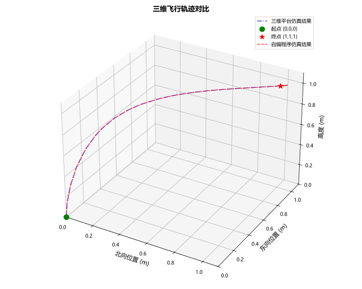
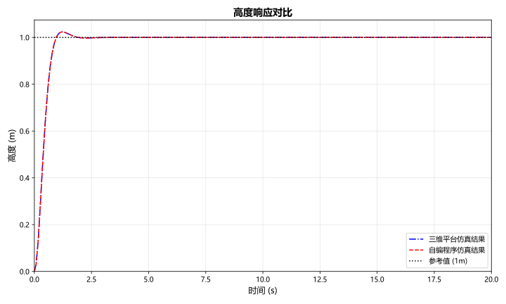
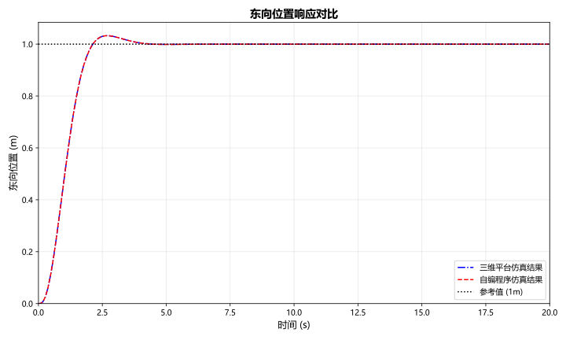
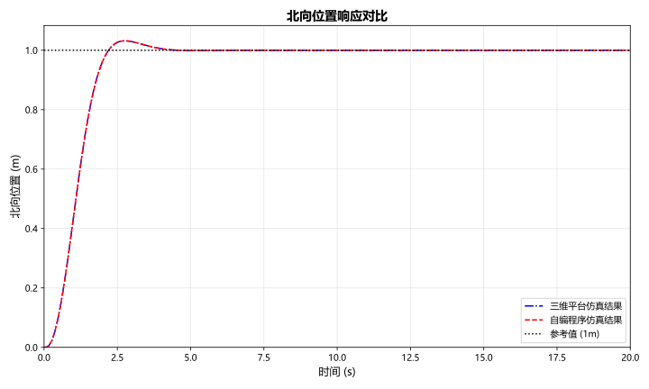

本文直接搬运了我的有关课程报告，如有用词生硬等问题请多见谅。
让我们开始吧。
引言
四旋翼无人机具有垂直起降、悬停、机动性强等优点，在航拍、测绘、救援等领域得到广泛应用。其控制系统设计通常需要解决欠驱动、强耦合、非线性等挑战。本课程报告以四旋翼无人机为对象，实现从点(0,0,0)到点(1,1,−1)的定点飞行，同时偏航角从0转到π/6。基于微分先行PD控制和内外环结构，设计控制器并通过仿真验证。
四旋翼无人机建模
坐标系定义
为了描述无人机的运动，引入三个右手直角坐标系：
-
惯性系Fi：原点在地面某点，x轴指北，y轴指东，z轴指向地心。
-
机体系Fv：原点在质心，各轴与惯性系平行。
-
本体系Fb：原点在质心，x轴指向前方，y轴指向右侧，z轴指向下方。
无人机的位置在惯性系下表示为p=[pN,pE,pD]T，速度v=[vN,vE,vD]T。姿态用欧拉角(ϕ,θ,ψ)（滚转、俯仰、偏航）描述，转动顺序为3-2-1（即先偏航，再俯仰，最后滚转）。从惯性系到本体系的旋转矩阵为：
Rb←i=Rx(ϕ)Ry(θ)Rz(ψ)(1)
为了讨论的方便，定义基本旋转矩阵如下：
绕 z 轴旋转 ψ（偏航角）：
Rz(ψ)=cosψ−sinψ0sinψcosψ0001(2)
绕 y 轴旋转 θ（俯仰角）：
Ry(θ)=cosθ0sinθ010−sinθ0cosθ(3)
绕 x 轴旋转 ϕ（滚转角）：
Rx(ϕ)=1000cosϕ−sinϕ0sinϕcosϕ(4)
因此，从惯性系到本体系的完整旋转矩阵为：
Rb←i=Rx(ϕ)Ry(θ)Rz(ψ)=cosθcosψsinϕsinθcosψ−cosϕsinψcosϕsinθcosψ+sinϕsinψcosθsinψsinϕsinθsinψ+cosϕcosψcosϕsinθsinψ−sinϕcosψ−sinθsinϕcosθcosϕcosθ(5)
运动学与动力学方程
平动运动方程
平动运动学方程为位置对时间的导数等于速度：
p˙=v(6)
平动动力学由牛顿第二定律在惯性系下给出：
mv˙=fg+fui(7)
其中fg=[0,0,mg]T为重力，fui为螺旋桨总升力在惯性系下的表示。升力在本体系下为fub=[0,0,−F]T，转换到惯性系得fui=Ri←bfub=Rb←iTfub。代入展开可得：
v˙Nv˙Ev˙D=m1−(sinθcosϕcosψ+sinψsinϕ)F−(sinθsinψcosϕ−sinϕcosψ)Fmg−(cosθcosϕ)F(8)
姿态运动方程
姿态运动学描述了欧拉角速率与本体系角速度ω=[ωx,ωy,ωz]T的关系：
ϕ˙θ˙ψ˙=100sinϕtanθcosϕsinϕ/cosθcosϕtanθ−sinϕcosϕ/cosθωxωyωz.(9)
姿态动力学基于角动量定理推导，在假设无人机为对称刚体（Ixy=Ixz=Iyz=0）时，有：
ω˙xω˙yω˙z=((Iyy−Izz)ωyωz+τx)/Ixx((Izz−Ixx)ωxωz+τy)/Iyy((Ixx−Iyy)ωxωy+τz)/Izz,(10)
其中τ=[τx,τy,τz]T为三轴力矩。
模型简化与线性化
平衡点
选择悬停状态为平衡点：
vN,0ϕ0θ0ωx,0F0τx,0=vE,0=vD,0=0,=0,=0,=ωy,0=ωz,0=0,=mg,=τy,0=τz,0=0.(11)
对位置pN,pE,pD和偏航角ψ在平衡点处无约束，通常取为零或期望值。
小偏差线性化
在平衡点附近对非线性模型进行泰勒展开，忽略高阶项，得到线性化模型。各通道解耦为二阶积分环节：
-
高度通道：h¨=m1uF，其中h=−pD，uF=F−F0;
-
滚转角通道：ϕ¨=Ixx1τx;
-
俯仰角通道：θ¨=Iyy1τy;
-
偏航角通道：ψ¨=Izz1τz;
-
水平位置通道（小角度近似且ψ=0时）：p¨N=−gθ，p¨E=gϕ。
当偏航角ψ不为零时，水平位置与姿态的耦合关系需要重新推导。由式(\ref{eq:motion})给出的平动动力学方程，在小角度假设下（ϕ≈0，θ≈0，cosϕ≈1，cosθ≈1，sinϕ≈ϕ，sinθ≈θ），并忽略高阶小量，可得：
v˙Nv˙E=−mF(θcosψ+ϕsinψ)=−mF(θsinψ−ϕcosψ)(12)
在平衡点F0=mg附近，令F≈mg，且考虑p¨N=v˙N，p¨E=v˙E，则：
[p¨Np¨E]=−g[cosψsinψsinψ−cosψ][θϕ].(13)
这是一个时变（当ψ变化时）或非线性关系，表现为以下特点：
-
当ψ=0时，式(\ref{eq:coupling})退化为p¨N=−gθ，p¨E=gϕ，即俯仰角控制北向位置，滚转角控制东向位置，实现解耦；
-
当ψ=0时，北向和东向加速度均由θ和ϕ共同决定，存在强耦合；
-
矩阵M(ψ)=[cosψsinψsinψ−cosψ]是可逆的，且det(M(ψ))=−1=0，这为反馈线性化提供了条件。
为了设计线性控制器，采用反馈线性化方法处理上述耦合关系。引入虚拟控制量a=[aN,aE]T，令：
[p¨Np¨E]=[aNaE](14)
则实际姿态角指令可通过求解式(13)获得：
[θϕ]=−g1M−1(ψ)[aNaE].(15)
由于M(ψ)的逆矩阵为：
M−1(ψ)=[cosψsinψsinψ−cosψ]−1=[cosψsinψsinψ−cosψ],(16)
即M−1(ψ)=M(ψ)（该矩阵满足M2=I）。因此：
[θdϕd]=−g1[cosψsinψsinψ−cosψ][aNaE](17)
其中θd和ϕd作为内环的期望姿态角输入。通过式(17)，将原非线性耦合系统转化为两个独立的二阶积分环节：
p¨N=aN,p¨E=aE.(18)
至此，可针对虚拟控制量aN和aE分别设计线性控制器（如PD控制器），实现对水平位置的解耦控制。
控制器设计
采用内外环控制结构：内环控制高度和三个姿态角，外环控制水平位置并生成内环的期望姿态角。所有通道均使用微分先行PD控制器，以避免设定值突变引起的微分冲击。
微分先行PD控制
微分先行PD控制器的控制律为：
u(t)=kpe(t)−kDy˙(t)+u0,(19)
其中e(t)=r(t)−y(t)。对于二阶积分环节y¨=bu，采用微分先行PD后，闭环传递函数为：
R(s)Y(s)=s2+bkDs+bkpbkp,(20)
无零点，避免了超调。通过极点配置，令闭环特征多项式与标准二阶系统s2+2ζωns+ωn2相等，可得：
kp=bωn2,kD=b2ζωn.(21)
故控制器可根据指标要求要求的ζ和ωn任意设计。
内环控制器设计
-
高度通道：bh=1/m，控制输入uF=F−mg，输出h;
-
滚转通道：bϕ=1/Ixx，控制输入τx，输出ϕ;
-
俯仰通道：bθ=1/Iyy，控制输入τy，输出θ;
-
偏航通道：bψ=1/Izz，控制输入τz，输出ψ。
实际仿真中无人机参数为：质量m=2.69kg，重力加速度g=9.81m/s2，转动惯量I_{xx} = I_{yy} = 0.015\,\text{kg·m}^2，I_{zz} = 0.0245\,\text{kg·m}^2。
根据性能指标要求，各通道控制器参数设计如下：
高度通道
取超调量Mp≤3%，由Mp=e−πζ/1−ζ2解得阻尼比：
ζH=π2+(lnMp)2(lnMp)2=π2+(ln0.03)2(ln0.03)2≈0.745,
取调节时间ts=1.0s（5%误差带），由ts≈3/(ζHωn)得：
ωnH=ζHts3≈0.745×1.03≈4.03rad/s,
则PD控制器参数为：
kpZkDZ=bhωnH2=mωnH2≈43.64,=bh2ζHωnH=2mζHωnH≈16.14.
偏航通道
取超调量Mp≤3%，阻尼比ζψ≈0.745，调节时间ts=0.8s，则：
ωnψ=ζψts3≈0.745×0.83≈5.03rad/s,
kpψkDψ=Izzωnψ2≈0.621,=2Izzζψωnψ≈0.184.
滚转与俯仰通道（内环）
取超调量Mp≤4%，阻尼比：
ζinner=π2+(ln0.04)2(ln0.04)2≈0.716,
取调节时间ts=0.6s，则：
ωn,inner=ζinnerts3≈6.99rad/s,
滚转通道PD参数：
kpϕkDϕ=Ixxωn,inner2≈0.732,=2Ixxζinnerωn,inner≈0.150.
俯仰通道PD参数：
kpθkDθ=Iyyωn,inner2≈0.732,=2Iyyζinnerωn,inner≈0.150.
根据上述计算，内环PD控制器参数汇总如表所示。
| 通道 |
b |
ζ |
ωn(rad/s) |
kp |
kD |
| 高度 |
1/m |
0.745 |
4.03 |
43.64 |
16.14 |
| 滚转 |
1/Ixx |
0.716 |
6.99 |
0.732 |
0.150 |
| 俯仰 |
1/Iyy |
0.716 |
6.99 |
0.732 |
0.150 |
| 偏航 |
1/Izz |
0.745 |
5.03 |
0.620 |
0.184 |
内环控制律为：
Fτxτyτz=mg+kpZ(hd−h)+kDZ(−h˙)=kpϕ(ϕd−ϕ)+kDϕ(−ωx)=kpθ(θd−θ)+kDθ(−ωy)=kpψ(ψd−ψ)+kDψ(−ωz)
外环控制器设计与反馈线性化
外环控制水平位置(pN,pE)，输出为期望滚转角ϕd和期望俯仰角θd，作为内环的输入。由式(17)知，实际加速度与姿态的关系为：
[p¨Np¨E]=−gM(ψ)[θϕ],M(ψ)=[cosψsinψsinψ−cosψ].(22)
由于M(ψ)可逆，且det(M)=−1，可设计虚拟控制量a=[aN,aE]T，令
[p¨Np¨E]=[aNaE]
则实际姿态指令为：
[θdϕd]=−g1M−1(ψ)[aNaE]=−g1[cosψsinψsinψ−cosψ][aNaE].(23)
虚拟控制量aN,aE采用微分先行PD控制器设计，将水平位置通道视为两个独立的二阶积分环节（传递函数g/s2）。取外环期望阻尼比ζo=0.716，调节时间ts=3 s（响应慢于内环。根据文献，内环带宽最好达到外环的五倍以上），则外环PD参数为：
kpN=kpE=gωno2,kDN=kDE=g2ζoωno.
代入参数计算得kpN=kpE=0.199，kDN=kDE=0.204。易知外环控制律：
aNaE=kpN(pNd−pN)+kDN(−p˙N),=kpE(pEd−pE)+kDE(−p˙E).
再将aN,aE代入式(14)得到θd,ϕd。
仿真结果与分析
仿真条件
| 软件/库 |
版本 |
| Python |
3.10.20 |
| NumPy |
2.2.6 |
| Matplotlib |
3.10.8 |
| Pandas |
2.3.3 |
自编程序环境见表2。在程序中实现了上述非线性模型和控制器。设定目标位置(pN,pE,h)=(1,1,1)（其中h=−pD=1），目标偏航角ψd=30∘=π/6 rad。初始状态全部为零。仿真时间20秒，步长0.01秒。无人机参数：m=2.69kg，Ixx=Iyy=0.015kg⋅m2，Izz=0.0245kg⋅m2，重力加速度g=9.81m/s2。
仿真结果
此处所谓"对比"为与课程提供仿真平台进行的对比
下面图片展示了无人机三维轨迹，对比了高度、偏航角响应，图对比了位置响应曲线，可以看出，自编程序结果与虚拟平台导出的CSV数据基本重合，微小差异源于虚拟平台可能包含未建模动态或离散化方式不同。上升时间约0.4秒，调节时间约2.5秒，超调量小于3%，稳态误差为零，偏航角精确跟踪30°，满足要求。





参考文献